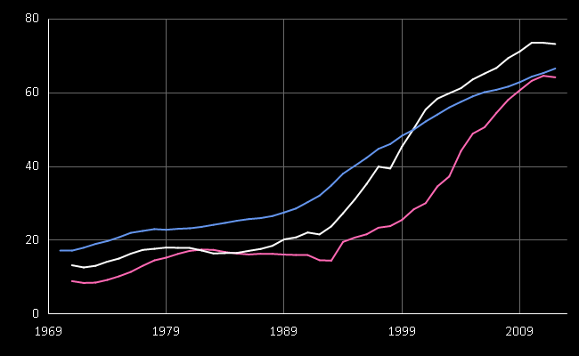

from FsReveal
Full name: Sample.Diagrams.mks
Full name: FsReveal.SmartArt.tx
Full name: Sample.Diagrams.diag
Full name: FsReveal.SmartArt.color
struct
member A : byte
member B : byte
member Equals : obj:obj -> bool
member G : byte
member GetBrightness : unit -> float32
member GetHashCode : unit -> int
member GetHue : unit -> float32
member GetSaturation : unit -> float32
member IsEmpty : bool
member IsKnownColor : bool
...
end
Full name: System.Drawing.Color
Full name: FsReveal.SmartArt.nd
Full name: Sample.Diagrams.d1
Full name: FsReveal.SmartArt.WithSize
Full name: FsReveal.SmartArt.Draw
from Microsoft.FSharp.Core
Full name: Microsoft.FSharp.Core.String.concat
Full name: Microsoft.FSharp.Core.ExtraTopLevelOperators.printfn
Full name: Sample.wb
static member GetDataContext : unit -> WorldBankDataService
nested type ServiceTypes
Full name: FSharp.Data.WorldBankData
<summary>Typed representation of WorldBank data. See http://www.worldbank.org for terms and conditions.</summary>
Full name: Sample.cz
Full name: Sample.po
The data for country 'Poland'
<summary>The indicators for the country</summary>
Full name: Sample.eu
module Chart
from FsReveal.SmartArt
--------------------
type Chart =
static member Area : data:seq<#value> * ?Name:string * ?Title:string * ?Labels:#seq<string> * ?Color:Color * ?XTitle:string * ?YTitle:string -> GenericChart
static member Area : data:seq<#key * #value> * ?Name:string * ?Title:string * ?Labels:#seq<string> * ?Color:Color * ?XTitle:string * ?YTitle:string -> GenericChart
static member Bar : data:seq<#value> * ?Name:string * ?Title:string * ?Labels:#seq<string> * ?Color:Color * ?XTitle:string * ?YTitle:string -> GenericChart
static member Bar : data:seq<#key * #value> * ?Name:string * ?Title:string * ?Labels:#seq<string> * ?Color:Color * ?XTitle:string * ?YTitle:string -> GenericChart
static member BoxPlotFromData : data:seq<#key * #seq<'a2>> * ?Name:string * ?Title:string * ?Color:Color * ?XTitle:string * ?YTitle:string * ?Percentile:int * ?ShowAverage:bool * ?ShowMedian:bool * ?ShowUnusualValues:bool * ?WhiskerPercentile:int -> GenericChart (requires 'a2 :> value)
static member BoxPlotFromStatistics : data:seq<#key * #value * #value * #value * #value * #value * #value> * ?Name:string * ?Title:string * ?Labels:#seq<string> * ?Color:Color * ?XTitle:string * ?YTitle:string * ?Percentile:int * ?ShowAverage:bool * ?ShowMedian:bool * ?ShowUnusualValues:bool * ?WhiskerPercentile:int -> GenericChart
static member Bubble : data:seq<#value * #value> * ?Name:string * ?Title:string * ?Labels:#seq<string> * ?Color:Color * ?XTitle:string * ?YTitle:string * ?BubbleMaxSize:int * ?BubbleMinSize:int * ?BubbleScaleMax:float * ?BubbleScaleMin:float * ?UseSizeForLabel:bool -> GenericChart
static member Bubble : data:seq<#key * #value * #value> * ?Name:string * ?Title:string * ?Labels:#seq<string> * ?Color:Color * ?XTitle:string * ?YTitle:string * ?BubbleMaxSize:int * ?BubbleMinSize:int * ?BubbleScaleMax:float * ?BubbleScaleMin:float * ?UseSizeForLabel:bool -> GenericChart
static member Candlestick : data:seq<#value * #value * #value * #value> * ?Name:string * ?Title:string * ?Labels:#seq<string> * ?Color:Color * ?XTitle:string * ?YTitle:string -> CandlestickChart
static member Candlestick : data:seq<#key * #value * #value * #value * #value> * ?Name:string * ?Title:string * ?Labels:#seq<string> * ?Color:Color * ?XTitle:string * ?YTitle:string -> CandlestickChart
...
Full name: FSharp.Charting.Chart
static member Chart.Line : data:seq<#key * #value> * ?Name:string * ?Title:string * ?Labels:#seq<string> * ?Color:Color * ?XTitle:string * ?YTitle:string -> ChartTypes.GenericChart
Full name: Sample.D2.MakeBox
union case Graphics.Fill: Fill * Graphics -> Graphics
--------------------
type Fill = | Color of Color
Full name: FsReveal.SmartArt.Fill
Full name: FsReveal.SmartArt.HtmlColor
inherit MarshalByRefObject
member AddMetafileComment : data:byte[] -> unit
member BeginContainer : unit -> GraphicsContainer + 2 overloads
member Clear : color:Color -> unit
member Clip : Region with get, set
member ClipBounds : RectangleF
member CompositingMode : CompositingMode with get, set
member CompositingQuality : CompositingQuality with get, set
member CopyFromScreen : upperLeftSource:Point * upperLeftDestination:Point * blockRegionSize:Size -> unit + 3 overloads
member Dispose : unit -> unit
member DpiX : float32
...
nested type DrawImageAbort
nested type EnumerateMetafileProc
Full name: System.Drawing.Graphics
Full name: FsReveal.SmartArt.WithMargin
Full name: Sample.D2.svg
Full name: Sample.D2.d2
Full name: Sample.MakeBox
union case Graphics.Text: Text -> Graphics
--------------------
namespace System.Drawing.Text
--------------------
type Text = string
Full name: FsReveal.SmartArt.Text
Full name: Sample.svg
Literate programming with F#

Tomas Petricek, F# Works
@tomaspetricek
| http://tomasp.net
| http://fsharpworks.com
What is literate programming?
What is literate programming?
public class Person {
/// <summary>
/// Gets or sets the name of the person
/// </summary>
public string Name { get; set; }
/// <summary>
/// Gets or sets the age of the person
/// </summary>
public string Age { get; set; }
}
|
This is not literate programming!
What is literate programming?
Professor Donald Knuth is not happy :-(

What is literate programming?
Let us change our traditional attitude to the construction of programs: Instead of imagining that our main task is to instruct a computer what to do, let us concentrate rather on explaining to human beings what we want a computer to do.
The WEB system
WEBis a combination of two other languages
- a document formatting language and
- a programming language.
I chose the name
WEBpartly because it was one of the few three-letter words of English that hadn’t already been applied to computers.
The WEB system
@* Printing primes: An example of \WEB.
\[The program text below specifies the ``expanded meaning'';
notice that it involves the top-level descriptions of three
other sections. When those top-level descriptions are replaced
by their expanded meanings, a syntactically correct \PASCAL\
program will be obtained.\]
@<Program to print...@>=
program print_primes(output);
const @!m=1000;
@<Other constants of the program@>@;
var @<Variables of the program@>@;
begin @<Print the first |m| prime numbers@>;
end.
|
Literate programming with F#
Literate programming with F#
Literate slides with FsReveal
No F# demo is complete without the |> operator...
1: 2: 3: |
[ "Hello"; " "; "Krakow"; "!" ] |> String.concat "" |> printfn "%s" |
FsReveal embeds the output automatically:
|
Literate slides with FsReveal
Get School Enrollment data from WorldBank
1: 2: 3: 4: |
let wb = WorldBankData.GetDataContext() let cz = wb.Countries.``Czech Republic``.Indicators let po = wb.Countries.Poland.Indicators let eu = wb.Countries.``European Union``.Indicators |
Compare Czech Republic and EU stats
1: 2: 3: 4: 5: 6: 7: 8: 9: 10: |
[ Chart.Line ( cz.``School enrollment, tertiary (% gross)``, Color = Color.HotPink) Chart.Line ( po.``School enrollment, tertiary (% gross)``, Color = Color.White) Chart.Line ( eu.``School enrollment, tertiary (% gross)``, Color = Color.CornflowerBlue) ] |> Chart.Combine |
Literate slides with FsReveal
FsReveal embeds the chart for us!

Looking under the cover...
Looking under the cover...
Enabled by the great F# community!
- F# Formatting to process F# scripts & Markdown
- F# Compiler Service for tool tips & evaluation
- FsReveal to generate reveal.js slides
- FsLab data-science libraries for charts
- FAKE & Suave to put things together & host
Literate F#: Using F# Scripts
Write an F# script with special comments
1: 2: 3: 4: 5: |
(** Use _Markdown_ in comments. *) (*** define-output:hello ***) printfn "Hello world!" (** write code as usual... *) (*** include-output:hello ***) |
Literate F#: Markdown mode
Write Markdown document with F# code snippets
Write standard _Markdown_ document
[lang=fsharp]
printfn "Hello world!"
With embedded F# snippets
|
Literate F#: Diagrams
We can embed results and even charts. How about...
Literate F#: Diagrams
Domain specific language for building diagrams!
1: 2: 3: 4: 5: 6: 7: 8: 9: 10: 11: 12: |
open FsReveal.SmartArt let MakeBox(backColor, content) = [ Fill(HtmlColor backColor, RoundedRectangle(10G, 10G)); Fill(HtmlColor "#FFFFFF", Text content)] |> Combine |> WithMargin (10G, 10G, 10G, 10G) let svg = Split(Horizontal, None, [ MakeBox("#1F5B56", "Diagrams") MakeBox("#325E6B", "..are..") MakeBox("#31683F", "fun!") ]) |
Literate tools for F#
FsLab Journal

Download the FsLab Journal Template!
ProjectScaffold docs

See ProjectScaffold on GitHub for more!
Conclusions
Literate scripting
Journal or notebooks for data science
Walkthrough tutorials in documentation
Literate software engineering
This is still an interesting problem!
Tomas Petricek, F# Works
@tomaspetricek
| http://tomasp.net
| http://fsharpworks.com
Thanks to Karlkim Suwanmongkol (@kimsk) for creating FsReveal!